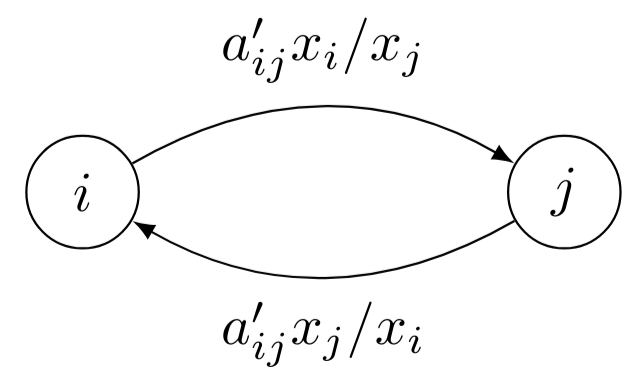
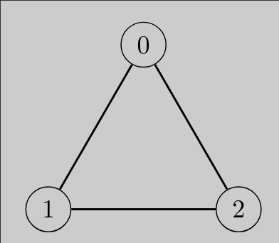
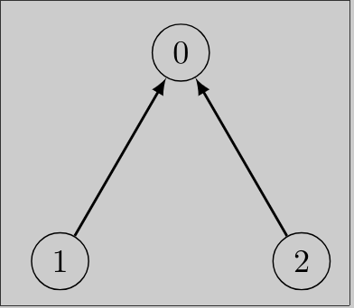
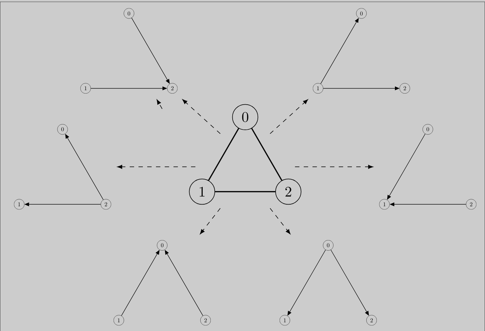
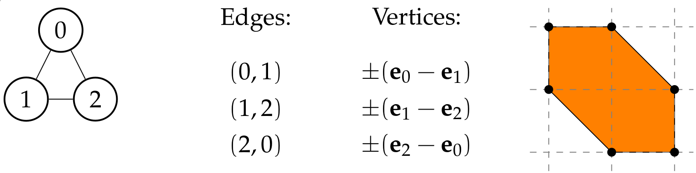
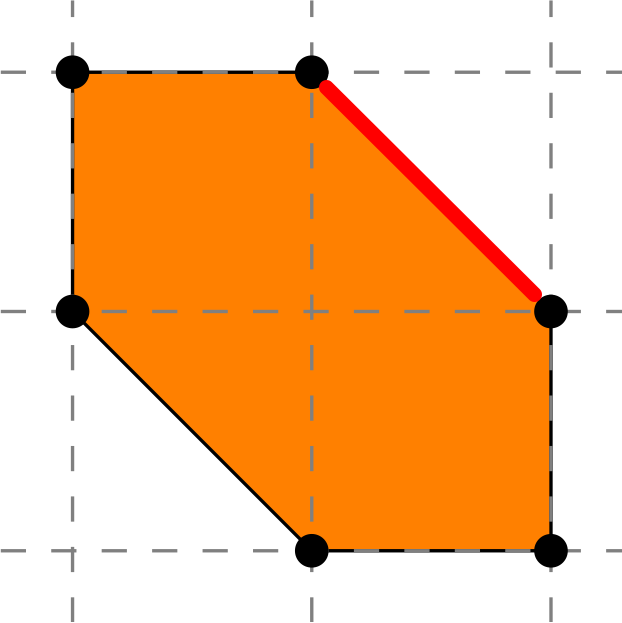
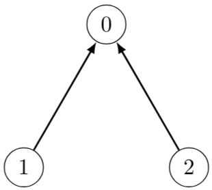
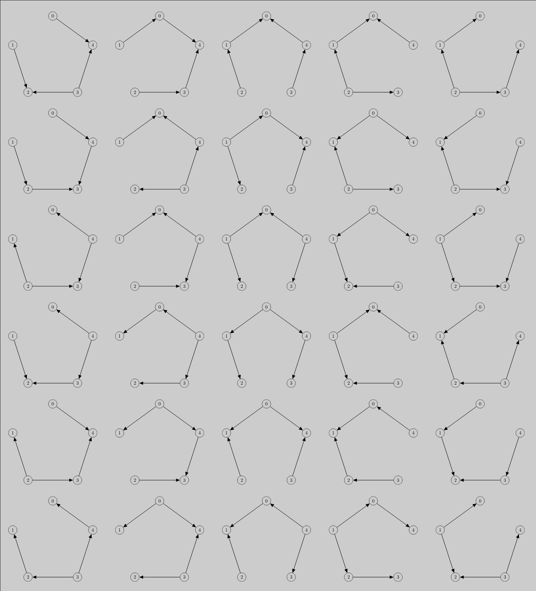
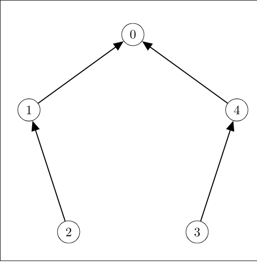

Root counting, tropical intersection, homotopy, and networks of oscillators
Tianran Chen
Oscillator:
an object varying between two states.
heart cells
neurons
chemical oscillators
AC generators
...
Kuramoto model (Y. Kuramoto 1975)
\[
\dot{\theta}_i = \omega_i - \sum_{j=1}^n k_{ij} \sin(\theta_i - \theta_j)
\]
A balance between simple formulation and complex behavior
Frequency synchronization configuration
$\dot{\theta}_i$ are all identical.
\[
c = \omega_i - \sum_{j=1}^n k_{ij} \sin(\theta_i - \theta_j)
\]
... they are equivalent to critical points defined by
\[
0 = \omega_i - \sum_{j=1}^n k_{ij} \sin(\theta_i - \theta_j)
\]
\[
\begin{aligned}
\omega_0 &= k_{01} \sin(\theta_0 - \theta_1) + k_{02} \sin(\theta_0 - \theta_2) \\
\omega_1 &= k_{10} \sin(\theta_1 - \theta_0) + k_{13} \sin(\theta_1 - \theta_3) \\
\omega_2 &= k_{20} \sin(\theta_2 - \theta_0) + k_{23} \sin(\theta_2 - \theta_3) \\
\omega_3 &= k_{31} \sin(\theta_3 - \theta_1) + k_{32} \sin(\theta_3 - \theta_2)
\end{aligned}
\]
Consider complex phase angles
\[
\theta_i \;\mapsto\;
z_i = \theta_i - \mathbf{i}\, r_i
\]
and the change of variables
\[
x_i = e^{\mathbf{i} z_i} = e^{r_i + \mathbf{i}\,\theta_i}
\]
\[
\sin(z_i - z_j) = \frac{
e^{\mathbf{i}z_i - \mathbf{i}z_j} -
e^{\mathbf{i}z_j - \mathbf{i}z_i}
}{2\mathbf{i}}
=
\frac{1}{2\mathbf{i}} \left(
\frac{x_i}{x_j} - \frac{x_j}{x_i}
\right)
\]
Transcendental terms
$\longrightarrow$
Algebraic term
\[
\theta_i
\;\longrightarrow\;
z_i = \theta_i - \mathbf{i}\, r_i
\;\longrightarrow\;
x_i = e^{\mathbf{i} z_i}
\]
The synchronization equations
becomes the Algebraic Kuramoto Equations
\[
\begin{aligned}
\omega_0 &= a_{01}' (x_0 / x_1 - x_1 / x_0) + a_{02}' (x_0 / x_2 - x_2 / x_0) \\
\omega_1 &= a_{10}' (x_1 / x_0 - x_0 / x_1) + a_{13}' (x_1 / x_3 - x_3 / x_1) \\
\omega_2 &= a_{20}' (x_2 / x_0 - x_0 / x_2) + a_{23}' (x_2 / x_3 - x_3 / x_2) \\
\omega_3 &= a_{31}' (x_3 / x_1 - x_1 / x_3) + a_{32}' (x_3 / x_2 - x_2 / x_3)
\end{aligned}
\]
Algebraic Kuramoto Equations:
\[
0 = \omega_i - \sum_{j=1}^n a_{ij}'
\left(
\frac{x_i}{x_j} - \frac{x_j}{x_i}
\right)
\]
How many solutions?
How to find all solutions?
What can network topology tell us?
Root counting
\[
\begin{aligned}
\omega_1 &= a_{10}' (x_1 / x_0 - x_0 / x_1) + a_{13}' (x_1 / x_3 - x_3 / x_1) \\
\omega_2 &= a_{20}' (x_2 / x_0 - x_0 / x_2) + a_{23}' (x_2 / x_3 - x_3 / x_2) \\
\omega_3 &= a_{31}' (x_3 / x_1 - x_1 / x_3) + a_{32}' (x_3 / x_2 - x_2 / x_3)
\end{aligned}
\]
Bezout number
Bi-homogeneous Bezout number
BKK bound
Intersection of tropical hypersurfaces
Birationally invariant intersection index
Intersection index (Kaveh & Khovanskii)
Given an irreducible $n$-dimensional toric variety $X$
and finite dimensional vector spaces of rational functions
$L_1,\dots,L_n$ on $X$,
the number of common zeros of $(f_1,\dots,f_n)$ in $X$
for generic choices of $f_1 \in L_1$, $\ldots$, $f_n \in L_n$
is the birationally invariant intersection index
\[
[\;L_1 \,,\, \ldots\,,\, L_n\;]
\]
(Generalization of the BKK bound)
Is is possible to have
$\text{B.I.I.I} \equiv \text{BKK bound}$ ?
Theorem
Suppose each $L_i = \text{span}_{\mathbb{C}}\{P_{ij}\}$
for some Laurent polynomials $P_{ij}$'s.
If each $\text{Newt}(L_i)$ is full dimensional and
every positive-dimensional proper faces of it
intersects $\text{Newt}(P_{ij})$
at no more than one point, then
\[
[ L_1, . . . , L_n ] \;=\;
\text{MVol} ( \text{Newt}(L_1), . . . , \text{Newt}(L_n) ).
\]
Consider the algebraic Kuramoto equations
\[
\begin{aligned}
-\omega_1 + a_{10}' (x_1 / x_0 - x_0 / x_1) + a_{12}' (x_1 / x_2 - x_2 / x_1) \\
-\omega_2 + a_{20}' (x_2 / x_0 - x_0 / x_2) + a_{21}' (x_2 / x_1 - x_1 / x_2) \\
\end{aligned}
\]
Proposition
Given a complete graph,
for generic choices of the coefficients,
the complex root count (b.i.i.i.) of
algebraic Kuramoto equations
\[
0 = \omega_i - \sum_{j=1}^n a_{ij}'
\left(
\frac{x_i}{x_j} - \frac{x_j}{x_i}
\right)
\]
is exactly the BKK bound.
B.i.i.i.
$\to$
BKK bound
$\to$
Volume?
Mixed volume of N.O. bodies
Mixed volume of Newton polytopes
Volume of a single polytope
Theorem
If $A$ and $B$ "touch" all the edges of
$\text{conv}(A \cup B)$, then
\[
\text{MVol}(A,B) \;=\; \text{Vol}_2( \text{conv} (A \cup B) )
\]
Mixed volume: 8
Normalized vol. = 8
Mixed volume $\longrightarrow$ normalized volume
For $\varnothing \ne S_1,\dots,S_n \subset \mathbb{Z}^n$,
let $\tilde{S} = S_1 \cup \cdots \cup S_n$.
If every positive dimensional face $F$ of $\text{conv}(\tilde{S})$ satisfies
$F \cap S_i \ne \varnothing$ for all $i \in \{1,\dots,n\}$; or
$F \cap S_i$ is a singleton for some $i \in \{1,\dots,n\}$; or
For each $i \in I := \{ i \mid F \cap S_i \ne \varnothing \}$,
$F \cap S_i$ is contained in a $|I|$-dimensional
coordinate subspace in which
and its projection of dimension less than $|I|$ then
\[
\text{MVol} (\text{conv}(S_1), \dots, \text{conv}(S_n)) =
\text{Vol}_n (\text{conv}(\tilde{S})).
\]
Definition: Adjacency polytope
For a graph $G$ with nodes $\{0,1,\ldots,N-1\}$,
\[
\nabla_G \;:=\;
\text{conv} \{ \pm(\mathbf{e}_i - \mathbf{e}_j) \mid \{i,j\} \in E(G) \}
\]
where $\mathbf{e}_0 = \mathbf{0}$.
$\pm(\mathbf{e}_0 - \mathbf{e}_1)$
$\pm(\mathbf{e}_1 - \mathbf{e}_2)$
$\pm(\mathbf{e}_2 - \mathbf{e}_0)$
Convex hull of the union of the Newton polytopes
Theorem
For a cycle graph $C_N$ of $N$ nodes,
the corresponding Kuramoto equations with generic coefficients
the total number of complex solutions it has is exactly
\[
\text{Vol}_{N-1}(\nabla_{C_N})
\]
Generalizations
Trees
Complete graphs
Cycles glued together along an single edge
Adjacency polytopes
$\longrightarrow$
Root system polytopes
Symmetric edge polytope :
Matsui, Higashitani, Nagazawa, Ohsugi, Hibi.
2011
Fundamental polytope :
Delucchi & Hoessly
2019
Directed edges
\[
0 = \omega_i - \sum_{j=1}^n a_{ij}'
\left(
\frac{x_i}{x_j} - \frac{x_j}{x_i}
\right)
\]

Directed Kuramoto equations


Generalized Kuramoto equations:
\[
c_i - \sum_{(i,j) \in \mathcal{E}(G)}
a_{ij} \frac{x_i}{x_j}
\]
Directed acyclic decomposition

3 oscillators has at most 6 synchronization configurations.
Subnetworks and adjacency polytope

Subnetworks and adjacency polytope


Deformation into facet subsystems
\[
\begin{aligned}
\omega_0 &= \left[
a_{01}' (x_0 x_1^{-1} - x_0^{-1} x_1) +
a_{02}' (x_0 x_2^{-1} - x_0^{-1} x_2)
\right]
\\
\omega_1 &= \left[
a_{10}' (x_1 x_0^{-1} - x_1^{-1} x_0) +
a_{12}' (x_1 x_2^{-1} - x_1^{-1} x_2)
\right]
\\
\omega_2 &= \left[
a_{21}' (x_2 x_1^{-1} - x_2^{-1} x_1) +
a_{20}' (x_2 x_0^{-1} - x_2^{-1} x_0)
\right]
\end{aligned}
\]
Deformation (adjacency polytope homotopy)
We define $H(x_0,x_1,x_2,t)=(h_0,h_1,h_2)$ given by
\[
\begin{aligned}
h_0 &=
\frac{\omega_0}{t} - \left[
a_{01}' \left(\frac{x_0}{x_1} - \frac{x_1}{x_0}\right) +
a_{02}' \left(\frac{x_0}{x_2} - \frac{x_2}{x_0}\right)
\right]
\\
h_1 &=
\frac{\omega_1}{t} - \left[
a_{10}' \left(\frac{x_1}{x_0} - \frac{x_0}{x_1}\right) +
a_{12}' \left(\frac{x_1}{x_2} - \frac{x_2}{x_1}\right)
\right]
\\
h_2 &=
\frac{\omega_2}{t} - \left[
a_{21}' \left(\frac{x_2}{x_1} - \frac{x_1}{x_2}\right) +
a_{20}' \left(\frac{x_2}{x_0} - \frac{x_0}{x_2}\right)
\right]
\end{aligned}
\]
which is a continuous deformation of the original system
As $t \to 0$, the solutions escape $(\mathbb{C}^*)^3 = (\mathbb{C} \setminus \{0\})^3$.
...and approach limit set at $t=0$ defined by
\[
\begin{aligned}
\omega_1 &= a_{110} x_1 / x_0 + a_{120} x_2 / x_0 \\
\omega_2 &= a_{210} x_1 / x_0 + a_{220} x_2 / x_0
\end{aligned}
\]
Deformation to facets
\[
\begin{aligned}
h_0 &=
\frac{\omega_0}{t} - \left[
a_{01}' \left(\frac{x_0}{x_1} - \frac{x_1}{x_0}\right) +
a_{02}' \left(\frac{x_0}{x_2} - \frac{x_2}{x_0}\right)
\right]
\\
h_1 &=
\frac{\omega_1}{t} - \left[
a_{10}' \left(\frac{x_1}{x_0} - \frac{x_0}{x_1}\right) +
a_{12}' \left(\frac{x_1}{x_2} - \frac{x_2}{x_1}\right)
\right]
\\
h_2 &=
\frac{\omega_2}{t} - \left[
a_{21}' \left(\frac{x_2}{x_1} - \frac{x_1}{x_2}\right) +
a_{20}' \left(\frac{x_2}{x_0} - \frac{x_0}{x_2}\right)
\right]
\end{aligned}
\]
as $t \to 0$ the solution set deform into limit sets at "infinity"
...defined by each facet subsystems
General construction
we form the deformation

A cycle of 5 oscillators has 30 subnetworks.
Proposition (Topology of facet subnetworks)
The underlying directed graph of a facet subnetwork
has the following properties:
it is acyclic ;
it contains all the nodes;
all paths between a pair of nodes have the same length;
each paths contains no more than half of the edges of any undirected cycle in the original graph.
Definition (Primitive subnetwork)
A subnetwork is called primitive
if the underlying graph is a connected, acyclic,
and has $N-1$ directed edges.

Proposition
The facet subsystem corresponding to a primitive subnetwork
defines a irreducible toric variety .
Primitive subnetworks
When will a facet subnetwork be primitive?
Theorem
For a tree graph,
all facet subnetworks are primitive.
Theorem
For a cycle graph $C_N$, if $N$ is odd then
all facet subnetworks are primitive.
Direct acyclic decomposition:
Deform a Kuramoto equations
...onto the facets of its adjacency polytope
...leads to facet subsystems
...and direct acyclic subnetworks
Tropical connections
Problem
For a given Kuramoto system with generic coefficients,
what is the tropical variety it defines?
Weaker problem
For a given Kuramoto system with generic coefficients,
what is the tropical stable intersection of this system?
Tropical semi-ring
\[
\mathbb{T} = (\; \mathbb{R} \cup \{ \infty \} \;,\; \oplus \;,\; \odot \;)
\]
with
\[
\begin{aligned}
a \oplus b &= \min \,\{\, a\,,\, b\, \}
&
a \odot b &= a + b
\end{aligned}
\]
Neutral elements:
\[
\begin{aligned}
a \oplus \infty &= \min(a,\infty) = a &
a \odot 0 &= a + 0 = a
\end{aligned}
\]
To form a tropicalization of a polynomial
replace $+$ with $\min$
replace $\cdot$ with $+$
replace coefficients with their "valuation"
Tropical zero set
\[
\mathbb{V}( \text{Trop} (f))
\]
is points where $\text{Trop}(f)$ is not differentiable.
\[
c_1 x^2 z^4 + c_2 xy + c_3 z^3
\mapsto
\min
\begin{cases}
\text{val}(c_1) + 2x + 4z \\
\text{val}(c_2) + 1x + 1y \\
\text{val}(c_3) + 3x
\end{cases}
\]
Zero set : points in $\mathbb{R}^3$ where this
is not differentiable.
I.e. points where the minimum is attained at least twice.
Tropical stable intersection
For polynomials $f_1,\dots,f_n$, the limit set
\[
\lim_{\epsilon \to 0} \bigcap_{i=1}^n [ \mathbb{V}(\text{Trop}(f_i)) + \epsilon \mathbf{v}_i ]
\]
for generic vectors $\mathbf{v}_1,\ldots,\mathbf{v}_n$ is well defined,
and is called the stable intersection .
tropical stable intersection ?
The equivalence
Kuramoto network
Kuramoto equations
Adjacency polytope
Tropical intersection
Facet subnetworks
Facet subsystems
Facet
Stable intersection
Primitive subnetworks
Irreducible toric variety
Simplicial facet
Isolated intersection of multiplicity one
Thank you!